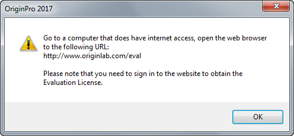

FAQ-2 Meine Demoversion ist abgelaufen, bevor ich meinen Test beendet habe
Demo-Expired
Letztes Update: 14.10.2016
- Wenn Sie Ihre Demoversion im nicht lizenzierten Drei-Tage-Modus ausgeführt haben, können Sie über den Dialog der Demolizenz eine Lizenz für eine erweiterte Testdauer erhalten. Bitte befolgen Sie die untenstehenden Schritte.
- Wenn Sie bereits eine Demolizenz erhalten und das Ende des Testzeitraums erreicht haben, wenden Sie sich bitte an den Vertrieb von OriginLab oder Ihren Origin-Vertragspartner, um über die Verlängerung der Nutzungsdauer Ihrer Demoversion zu sprechen.
Ihre Demoversion lizenzieren
Beim Installieren von Origin als Demoversion können Sie entweder Origin-Demoversion installieren auswählen, um die Standardversion zu installieren, oder OriginPro-Demoversion installieren auswählen, um die Pro-Version zu installieren.
- Demoversion online lizenzieren (mit Internetzugriff)
- Die einzelnen Schritte finden Sie hier
- Demoversion offline lizenzieren (ohne Internetzugriff)
- Starten Sie Origin.
- Wählen Sie Dieser Computer hat keinen Internetzugang. Wie erhalte ich eine Demolizenz? .
- Klicken Sie auf OK. Ihnen wird folgenden Meldung angezeigt:

- Öffnen Sie einen Webbrowser für die Webseite von OriginLab www.originlab.com.
- Klicken Sie auf die Schaltfläche "Testen" oben rechts auf der Startseite.
- Klicken Sie entweder auf den Link zum Anfordern einer Origin-Demolizenz für eine Lizenz der Standardversion oder auf den Link zum Anfordern einer OriginPro-Demolizenz für eine Lizenz der OriginPro-Version, bei unter Hinweis 2 zu finden.
- Auf der Seite Anfrage für eine 21-Tage-Demoversion klicken Sie auf Fortfahren.
- Melden Sie sich auf der Webseite von OriginLab an.
- Überprüfen Sie, dass Ihre E-Mail-Adresse in Ihrem Benutzerprofil korrekt ist (die Lizenz wird an diese E-Mail-Adresse gesendet).
- Klicken Sie auf Demolizenz anfordern.
- Kopieren Sie die Lizenz in der E-Mail, die Sie erhalten.
- Speichern Sie sie in Notepad auf der Festplatte oder auf einem USB-Stick.
- Öffnen Sie sie auf dem Computer, auf dem Sie Origin testen wollen.
- Klicken Sie auf OK in der Anweisungsmeldung.
- Wählen Sie Ich habe bereits eine Demolizenz - wie gebe ich sie ein?
- Klicken Sie auf OK.
- Fügen Sie sie in Origin im ersten Feld ein.
- Geben Sie die E-Mail-Adresse, an die die Lizenz gesendet wurde, in das zweite Feld ein.
- Klicken Sie auf OK.
Sie sollten nun eine Meldung angezeigt bekommen, dass Ihre Lizenz erfolgreich aktualisiert wurde. Origin führt die Demolizenz für 21 Tage ab dem Zeitpunkt aus, an dem Sie Ihre Lizenz erhalten haben.
Schlüsselwörter:Demolizenz, Lizenz